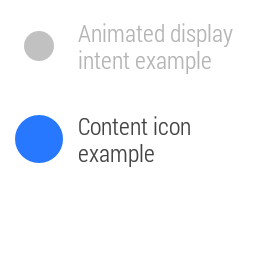
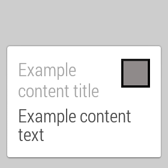
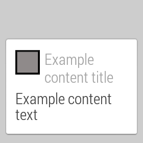
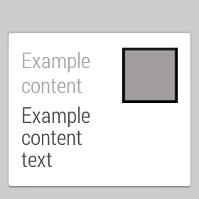
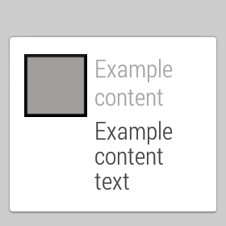
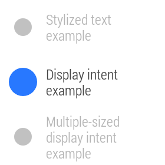
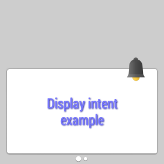
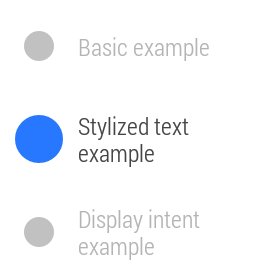
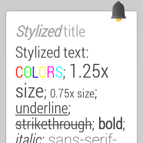
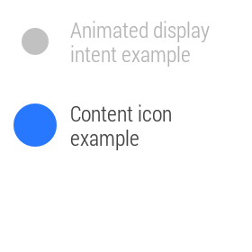
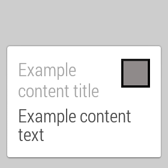
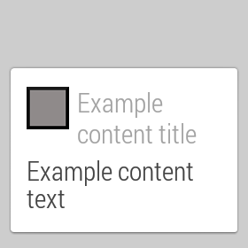
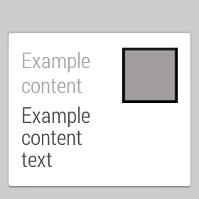
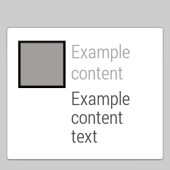
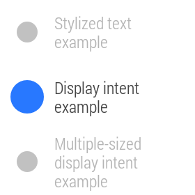
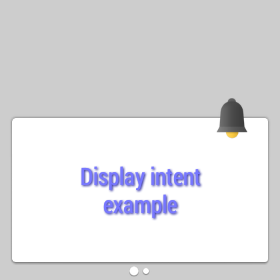
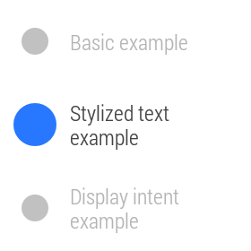
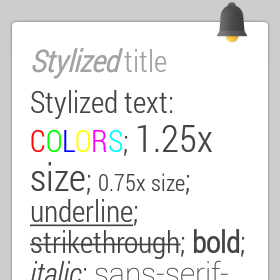
About: This sample application provides a showcase of available notification styles and demonstrates various features of the Android Wear notifications API. Running the sample on your companion allows you to select between various notification styles and to see how these notifications are displayed, both in a phone's notification shade and on the wearable. The companion application allows you to create the following types of notifications:
This sample also allows you to toggle other attributes for each of these notification types, including whether a content intent or action are included, and whether the notification is marked as "local only," indicating that it should not be bridged between devices.
You can also run a separate APK on your wearable for even more customizable notifications. The wearable notification styles include:
How to run: Install the Application APK on the companion, and/or the Wearable APK on the wearable. Start the sample by running the Wearable Notifications application on the companion, or by starting the Wearable Notifications application on the wearable. To do the latter, go to the voice menu - either by saying Ok Google or tapping the home screen - and select the "Start..." option. Then, select "Wearable Notifications" from the submenu.
Wearable APIs used: Notification.WearableExtender, Notification.BigTextStyle, Notification.BigPictureStyle (note that NotificationCompat, rather than Notification, is used on the companion side in order to be compatible with older versions of Android).
Screenshots:
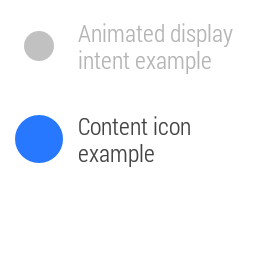
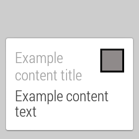
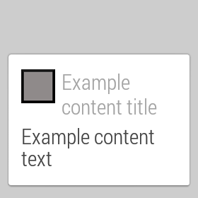
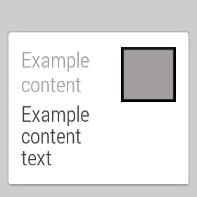
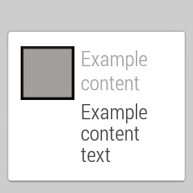
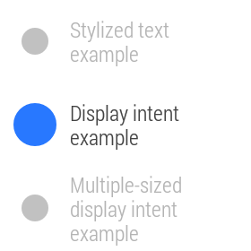
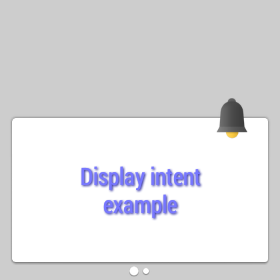
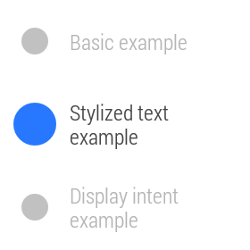
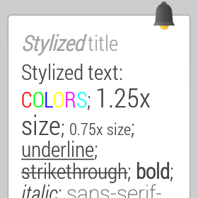